⚡ CholloCesta
Créditos de Imágenes
Autoría, licencia y origen de todas las imágenes que ilustran las fichas de producto de esta web.
Por qué no usamos fotos de Amazon: las imágenes de catálogo de Amazon son propiedad de los fabricantes o de Amazon y su reutilización fuera de la Product Advertising API vulnera las condiciones del Programa de Afiliados y las directrices de marca de Amazon. Por eso todas las imágenes de CholloCesta proceden de Wikimedia Commons y Openverse con licencia Creative Commons o dominio público, y se muestran aquí con la atribución que exige cada licencia.
Nota: las imágenes son ilustrativas de la categoría de cada producto (por ejemplo, una foto de un smartphone genérico en la ficha de un móvil concreto). No corresponden al producto exacto enlazado ni a la fotografía oficial del fabricante. Los precios, disponibilidad y características sí proceden de Amazon.
Si eres el autor de alguna imagen y prefieres que se retire, escríbenos a 2025generation@gmail.com y la quitamos en 24-48 h.
Nota: las imágenes son ilustrativas de la categoría de cada producto (por ejemplo, una foto de un smartphone genérico en la ficha de un móvil concreto). No corresponden al producto exacto enlazado ni a la fotografía oficial del fabricante. Los precios, disponibilidad y características sí proceden de Amazon.
Si eres el autor de alguna imagen y prefieres que se retire, escríbenos a 2025generation@gmail.com y la quitamos en 24-48 h.
| Imagen | Categoría | Autoría | Licencia | Origen |
|---|---|---|---|---|
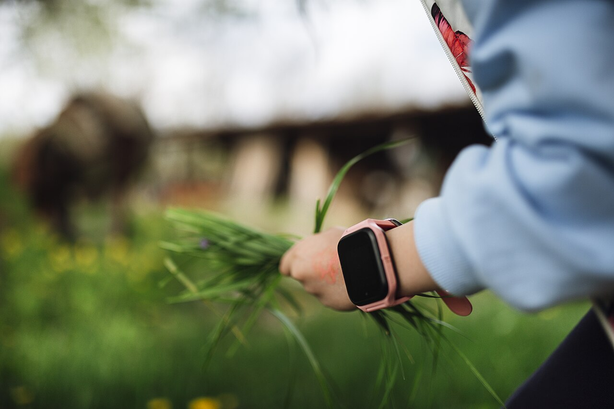 |
Reloj inteligente A child wears a smartwatch on her wrist while picking grass.jpg |
Shixart1985 | CC BY 2.0 | Fuente original |
 |
Teléfono móvil File:Hand holding smartphone with blank white screen.jpg |
Santeri Viinamäki | CC BY-SA 4.0 | Fuente original |
 |
Portátil Man Holding Laptop Computer Typing While Dog Watches |
Image Catalog | cc0 | Fuente original |
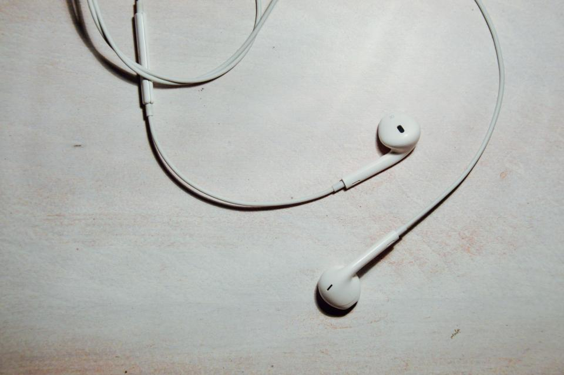 |
Auriculares inalámbricos Headphones Earbuds |
Piotr Lohunko | cc0 | Fuente original |
 |
Altavoz Bluetooth R.O.GNT Bluetooth Speaker 0601 Weiß |
GBPublic_PR | by | Fuente original |
 |
Robot aspirador RVC3N Robotic Vacuum Cleaner 'Kreng' on the job |
dvanzuijlekom | by-sa | Fuente original |
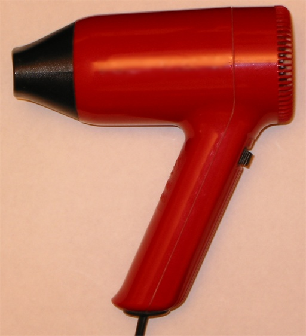 |
Secador de pelo Hair dryer |
Magnus Manske | by-sa | Fuente original |
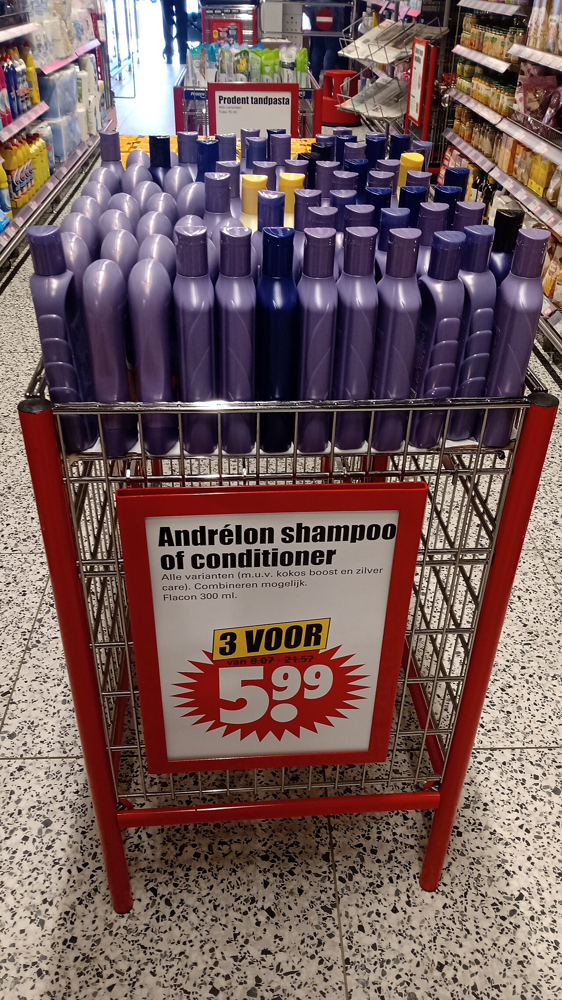 |
Champú File:Shampoo Bottle made of PLA-Blend Bio-Flex.jpg |
F. Kesselring, FKuR Willich | CC BY-SA 3.0 de | Fuente original |
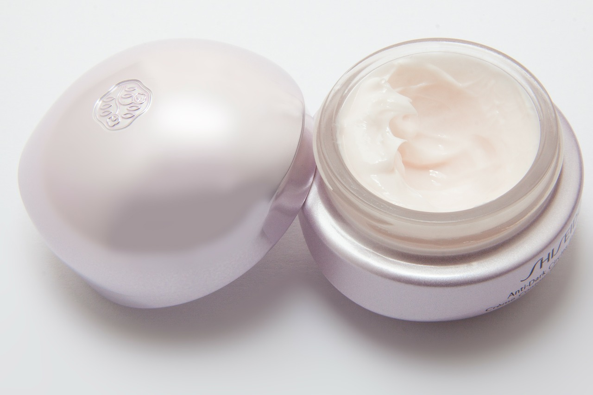 |
Crema cosmética Cream in round container.jpg |
stux | CC0 | Fuente original |
 |
Sérum facial Cosmético en frasco aplicador (imagen de Openverse) |
Openverse / autor no especificado | CC0 | Fuente original |
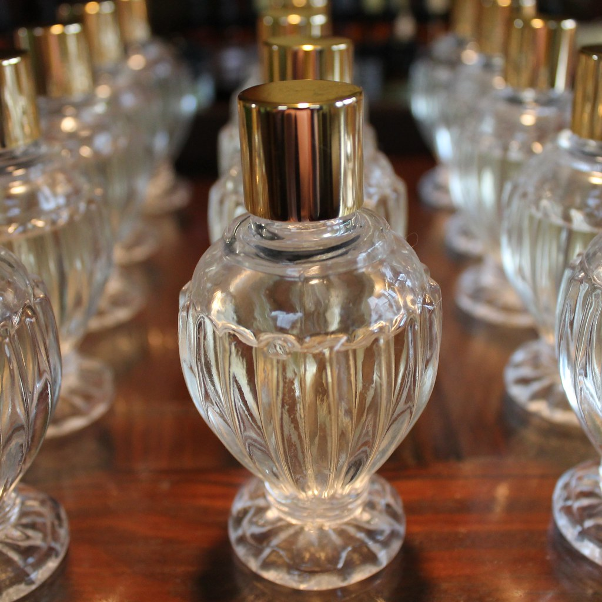 |
Perfume Perfume Bottles |
Vetiver Aromatics | by-sa | Fuente original |
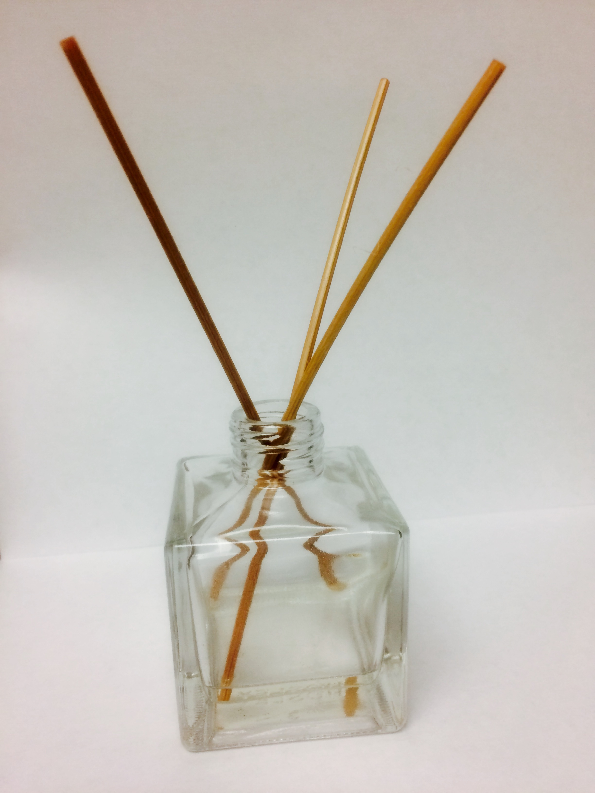 |
Ambientador File:Reed diffuser.jpg |
Alex Tang | cc0 | Fuente original |
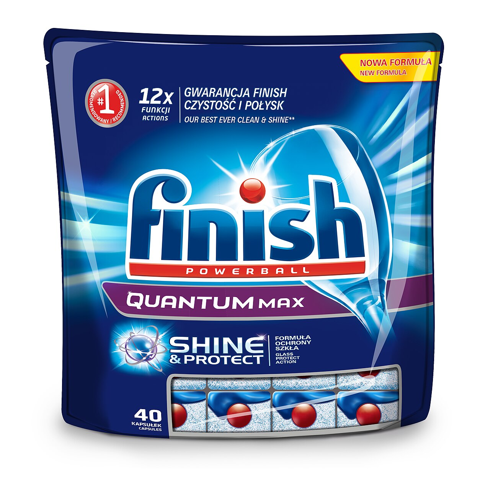 |
Lavavajillas Dishwasher loaded with clean dishes at a home kitchen in the evening.jpg |
Shixart1985 | CC BY 2.0 | Fuente original |
 |
Lavadora Washing machine agitator |
BrokenSphere | by-sa | Fuente original |
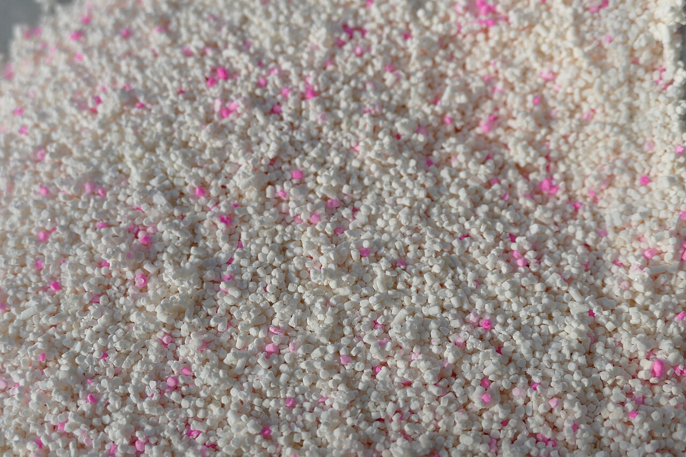 |
Detergente Detergent - Persil Megaperls 03.jpg |
Kritzolina | CC BY-SA 4.0 | Fuente original |
 |
Productos de limpieza File:Mohkam Mopping.jpg |
Hardeep Singh from Vancouver, Canada | CC BY 2.0 | Fuente original |
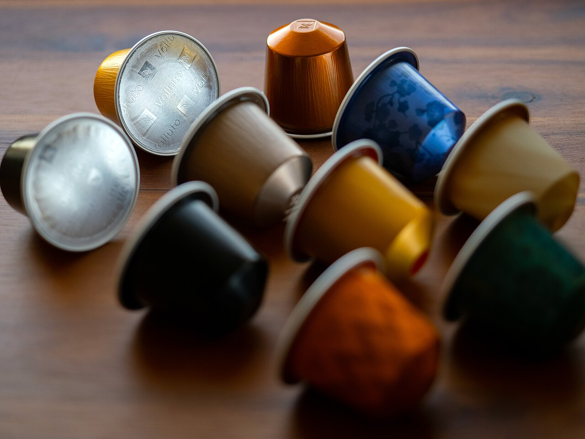 |
Cápsulas de café Nespresso-capsules AB-01.jpg |
Chepry 💬 ( Andrzej Barabasz ) 📷 🇵🇱 | CC BY-SA 4.0 | Fuente original |
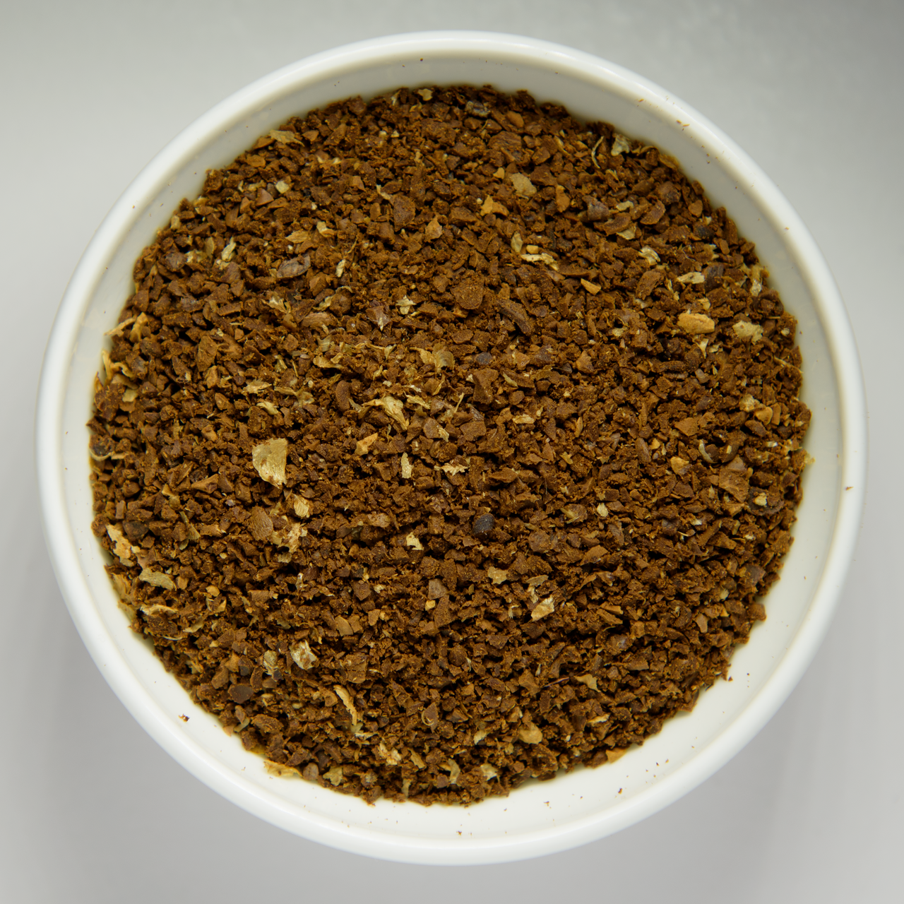 |
Café molido Coarsely grounded coffee beans in white bowl.png |
Alorin | CC BY 4.0 | Fuente original |
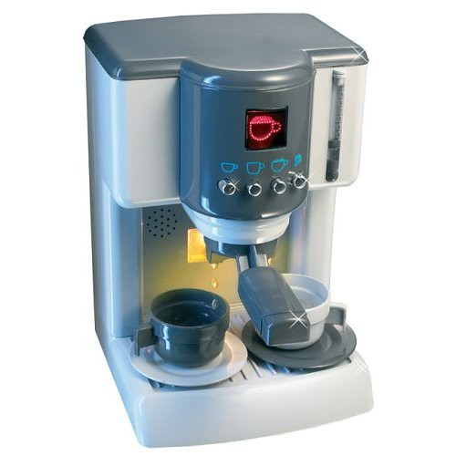 |
Cafetera de espresso Cafetera de espresso (Openverse) |
DanLacher (Openverse) | CC BY 2.0 | Fuente original |
| Aceite de oliva Bottle of olive oil.jpg |
margenauer from Pixabay | CC0 | Fuente original | |
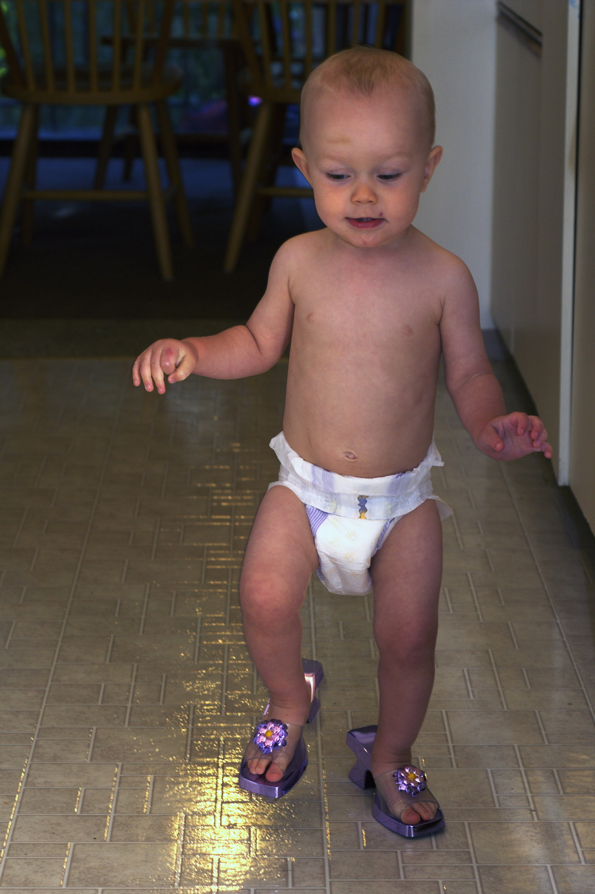 |
Pañales para bebé Baby diaper |
Kyle Flood from Victoria, British Columbia, Canada | by-sa | Fuente original |
 |
Toallitas para bebé File:Disinfectant wipes.jpg |
MrBeastRapper | CC BY-SA 4.0 | Fuente original |
| Higiene dental Toothbrush, Toothpaste, Dental Care (571741) (cropped) |
Steve Buissinne, South Africa | cc0 | Fuente original | |
| Fitness en casa dumbbells_adjusted |
jerryonlife | by | Fuente original | |
 |
Regalos Colourful gift boxes wrapped in shiny paper with ribbons, arranged on a soft white surface. The warm lighting adds a cozy, festive mood. This joyful Christmas scene was photographed in Kozhikode, Kerala. |
Bigul Malayi | cc0 | Fuente original |